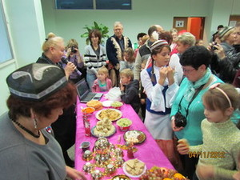
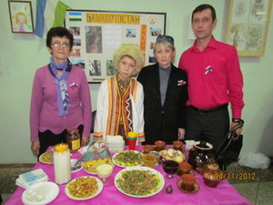
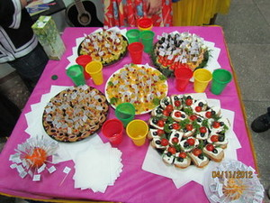
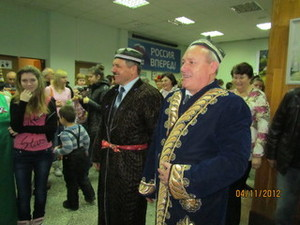
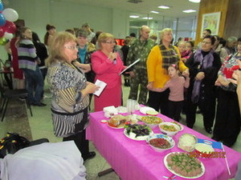
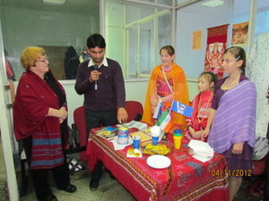
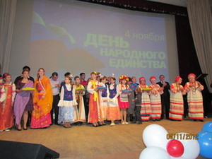

День народного единства в Тарусе
4 ноября 2012 года в киноконцертном зале прошло, ставшее уже традиционным, празднование Дня народного
единства. В фойе была организована дегустация блюд национальных кухонь: украинской, русской, узбекской,
азербайджанской. Впервые были представлены традиционные блюда индийцев и башкир. Был и совсем необычный
стол. Яркий, красочный, с добрыми пожеланиями, представленный Молодежным советом при главе администрации
района.




Экскурсоводом по этому многообразию блюд выступила Коврижкина Надежда Анатольевна, заведующая отделом
культуры администрации МР «Тарусский район». Радушные хозяйки с удовольствием делились рецептами
вкуснейших блюд со всеми желающими порадовать своих близких новым блюдом.
Праздник плавно перетек из фойе в зал. Праздничное мероприятие началось с показа репродукций картин,
отображавших события Смутного времени, страшного периода в истории России, когда под угрозой было само
существование государства. Ведущая праздничного концерта рассказала краткую историю возникновения
праздника – Дня народного единства - и предоставила слово Министру конкурентной политики Калужской
области Николаю Викторовичу Владимирову. В его словах прозвучала гордость за нашу землю, за нашу малую
родину, за наш труд, который приносит процветание всему калужскому краю и делает Калужскую область
привлекательной для жизни, учебы, работы и отдыха, для гостей, с удовольствием посещающих нашу
землю.




Затем на сцену поднялся глава администрации МР «Тарусский район» Евгений Михайлович Мальцев. Он сказал,
что «мы едины и не важно, какой мы национальности, важно, что мы - народ одной большой страны, единой
страны, нашей любимой России. И если мы будем и дальше вместе, то все у нас получится, потому что мы
сила!»
Не обошлось в этот праздник без награждений и поздравлений: обладателям «Премии талантливой молодежи и их
наставникам» были вручены дипломы.
Дипломы и премии вручены:
В номинации «За успехи в творческой деятельности»:
Коноваловой Елизавете, учащейся Лопатинской средней школы;
Аникиной Алене, учащейся Лопатинской средней школы
В номинации «Талант»:
Клычниковой Ольге, учащейся Некрасовской основной школы
В номинации «За активную социально-общественную деятельность»:
Чучаевой Юлии, учащаяся Тарусской средней школы № 1
В номинации «За неоднократную победу в олимпиадах»:
Ларионову Александру, учащемуся Тарусской средней школы № 2.
В номинации «За успехи в интеллектуальной, научной деятельности»:
Аверину Алексею, учащемуся Лопатинской средней школы.
Премии вручены также наставникам талантливой молодежи:
Сергею Михайловичу Обыденкину, преподавателю-организатору ОБЖ профессионального лицея № 34;
Любови Валерьевне Баклановой, учителю истории и обществознания Тарусской средней школы № 1.
А далее был концерт. Публика с восторгом встречала Алину Кузнеченкову, которая очень ярко исполнила
молдавский и еврейский танцы. Лирические армянские песни исполнил Гарик Арутюнян, тепло встречала
публика и песни Павла Ларина, и хора «Русская песня» , и дуэта «Ностальжи». Финальным номером концертной
программы стало выступление ансамбля «Тарусские зори».
По окончании концерта всех, кто с любовью готовил национальные блюда, и участников концерта пригласили на
сцену. Организаторы торжественного мероприятия вручили им памятные значки и русские караваи.